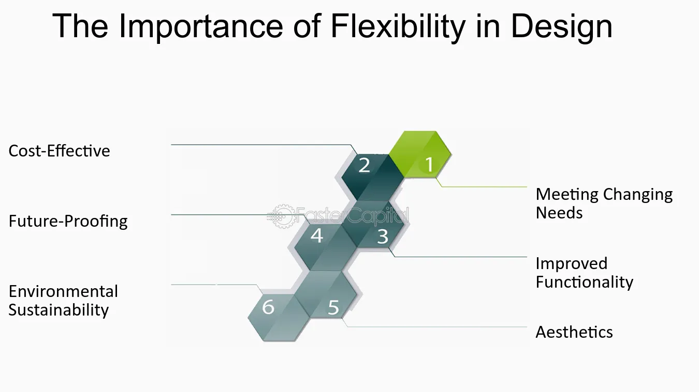
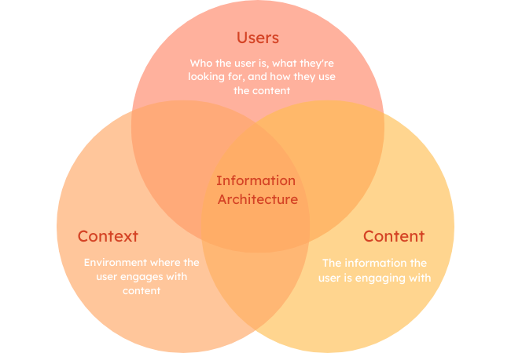
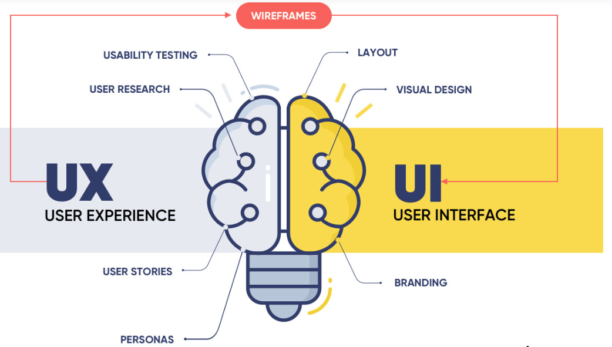
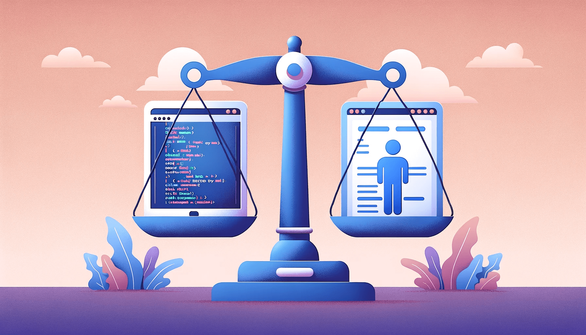

In Systems Design, Engineering, and Organization, it is essential to prioritize two aspects: flexibility and security. Flexibility refers to the capability of the system to meet the ever-changing needs, technologies, and environments, ensuring that the organization can come up with new ideas and strategies and stay relevant in the market. On the other hand, security measures help in maintaining the safety of information, assets, and systems from illegal use, intrusions, and cyber-crises among others. A system that is designed to be flexible must also incorporate strong security features. This will help avoid vulnerabilities and adapt quickly to the environment, enabling the platform to evolve while gaining user trust and protecting their data.
In content and information architecture, the way information is arranged and categorized is important for users' usability and experience. Organizational systems provide a structured framework that helps users navigate the platform easily. These systems will determine how information is divided and presented. Moreover, they are essential for businesses managing large volumes of content. By using organizational systems, I believe users can easily find and access relevant information, improving overall usability and creating a seamless user experience.
The ultimate goal of user experience (UX) design is to provide users with an intuitive, efficient, and relevant experience. A well-designed platform that meets the needs and expectations of the user must prioritize user experience. UX design needs a deep understanding of the users, what they value, their abilities, and their limitations while aligning with the business goals of the company. Incorporating a careful visual design approach enhances UX by creating a consistent and organized interface while making the design stand out and provide context. A strong visual design helps guide users through the platform, making interactions smoother and more predictable. Combining good usability and efficient visual design leads to a successful design, fostering positive user engagement.
Security and ethical considerations are essential for maintaining user trust. Protecting user data through secure encryption, multi-factor authentication, and other privacy practices is fundamental to safeguarding personal information. At the same time, users should be clearly informed about how their data is collected and used. Transparent privacy policies and easy-to-understand consent mechanisms help users make informed decisions. Ethical design ensures that algorithms or automated systems are unbiased and accessible to a wide range of people. Prioritizing ethical decisions, such as avoiding discriminatory practices and protecting user privacy, builds trust and creates a safer, more equitable digital environment.
All the above focus on flexibility, proper organization, customer experience, and security to make sure that the platform remains user-friendly and effective. Flexibility is an important feature as it allows the system to adapt to changing conditions, while an organized content architecture enables fast and effective navigation. Efficient design decisions help achieve higher user satisfaction, while strong security and ethical grounding provide a basis for long-term user trust. By implementing these priorities, we can address the needs of users and ensure the sustainability and security of the digital environment.